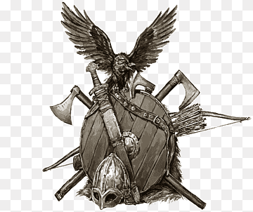

¡Saludos, guerreros de Calradia!
Está siendo un verano emocionante para TaleWorlds Entertainment. El equipo encargado de la comunicación y la comunidad ha presentado recientemente Mount & Blade II: Bannerlord en el E3 de Los Ángeles, y el mes que viene asistirá a la Gamescom, el mayor evento de videojuegos de Europa, para que muchos periodistas puedan probar el juego de primera mano.
Mientras tanto, nos gustaría contaros algo. Somos conscientes de que no nos hemos estado comunicando con la frecuencia y la cercanía que deberíamos. Sentimos que no hemos logrado conectar con nuestra comunidad y, a veces, podría parecer que no os prestamos toda la atención que os merecéis. Estamos increíblemente agradecidos por todo vuestro apoyo, aunque no hayamos sabido transmitiros cuánto os agradecemos que nos hayáis acompañado durante estos últimos años.
Queremos mejorar nuestra relación y comunicación con vosotros, y nos hemos propuesto empezar ahora mismo. Sabemos que estáis deseando echarle el guante a Mount & Blade II: Bannerlord y entendemos que, después de todos estos años, tengáis muchas preguntas. Básicamente, creemos que la mejor forma de conectar con vosotros es siendo transparentes y abriéndoos nuestras puertas para que seáis testigos de nuestro trabajo diario, así como teniendo unos canales directos a través de los cuales podremos contaros todo lo relacionado con TaleWorlds Entertainment y Mount & Blade, al menos todo aquello que podamos (o no) contaros en cada momento. Nos estamos esforzando en crear el mejor juego posible, una tarea dura que nos ha llevado muchos años. ¡Es vuestro apoyo el que nos motiva para seguir esforzándonos!
Por este motivo, ¡hemos decidido empezar un nuevo blog semanal! Cada jueves, podréis conocer al diverso y talentoso equipo de diseñadores, artistas, programadores, etc. que están detrás de Mount & Blade y que hacen que el juego sea posible. Seréis testigos de nuestros esfuerzos y nuestras esperanzas, nuestro trabajo diario y nuestras partes favoritas del juego... Esperamos que disfrutéis de su lectura... ¡y que os haga la espera más llevadera! Este blog estará disponible en varios idiomas, ya que valoramos todas nuestras comunidades y sus idiomas por igual. Para nosotros, no hay jugadores de «primera clase» y «segunda clase». No obstante, tal y como explicaremos más adelante, en este momento no podemos confirmar qué idiomas estarán incluidos en el juego en el día de su lanzamiento. Por tanto, os rogamos que tengáis en cuenta que, aunque el blog esté disponible, por ejemplo, en catalán, eso no implica automáticamente que el juego se vaya a lanzar completamente en catalán.